人工参照固定为修订后 V87，预测与根系轮廓均未改动。V90 含人工确认单根修正；这里报告同标注一致度，不是独立测试精度。
四期“全图”为当前所有可用的 2541×1108 上半观察区；T1 为基线，不计入三类时序分数。
| 版本 | 准确率 | 持续Dice | 新生Dice | 延伸Dice | 宏平均Dice |
|---|---|---|---|---|---|
| 人工标注 | 参照标准；不单独报告模型精度 | ||||
| original_U_Net_V66 | 0.9393 | 0.9755 | 0.8518 | 0.3124 | 0.7132 |
| V90_reviewed_output | 0.9610 | 0.9821 | 0.9076 | 0.5457 | 0.8118 |
各期及汇总指标CSV · 分类别完整指标CSV · 三个模型100轮真实损失CSV · 完整说明 · 全图与指标包 · 局部对比与数据包 · 原始训练曲线与日志包
原始三模型曲线为 V66、原 (18).json 的时序训练，非重新训练分割网络，也非 V90 的新训练。真实1–100轮逐点展示。
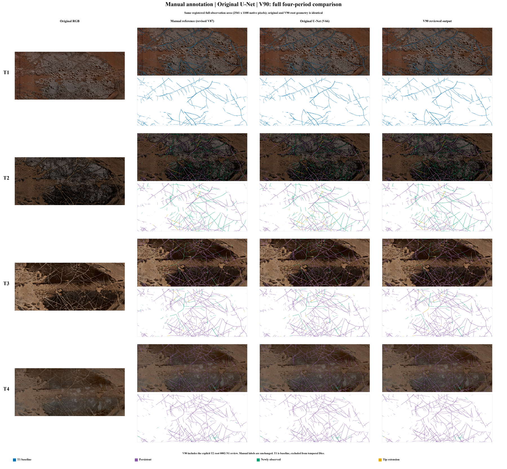
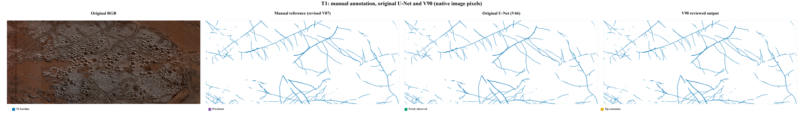
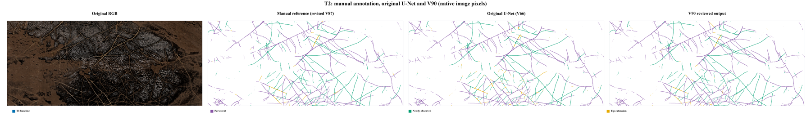
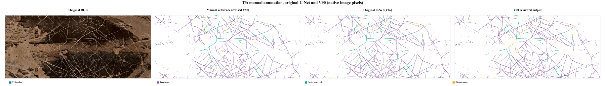
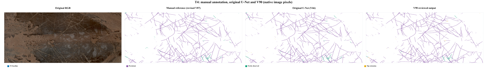
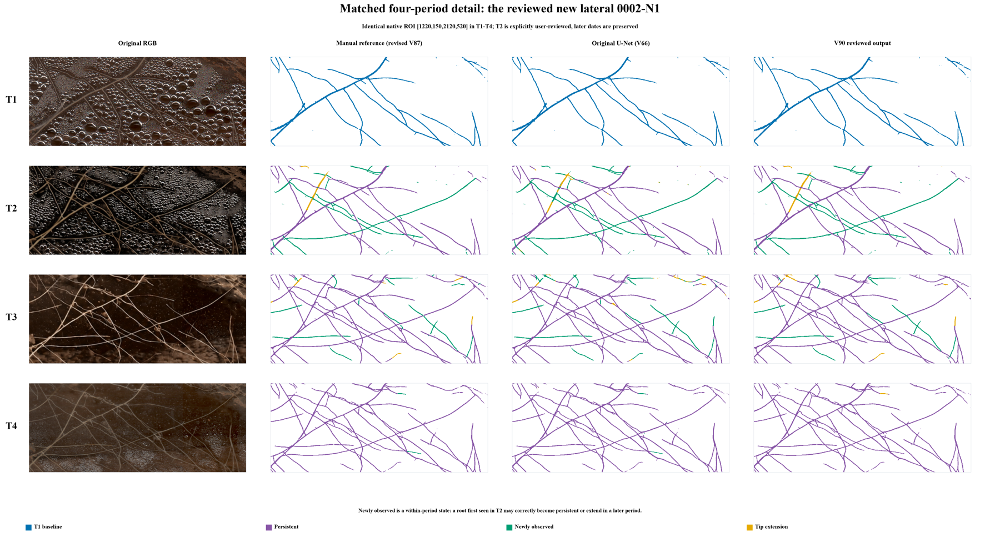
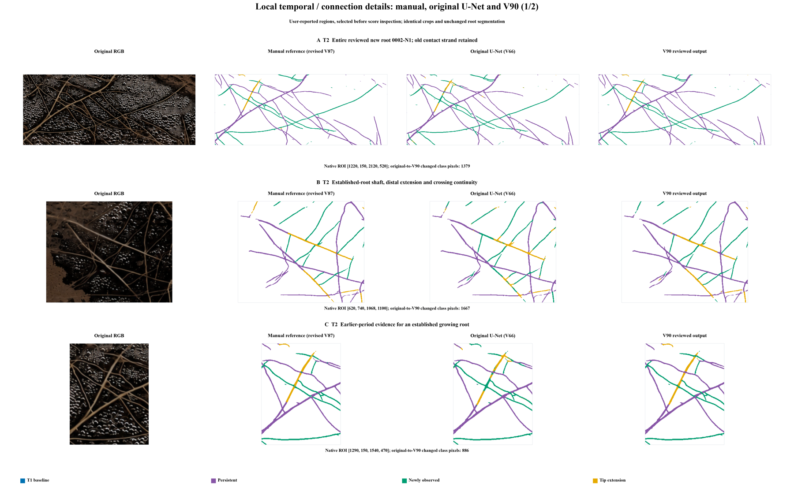
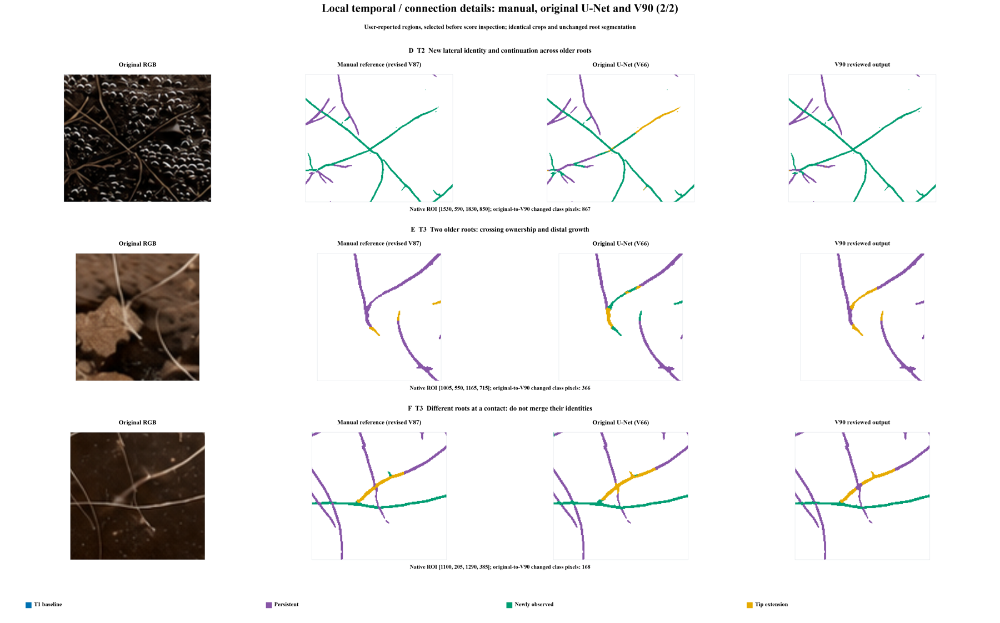
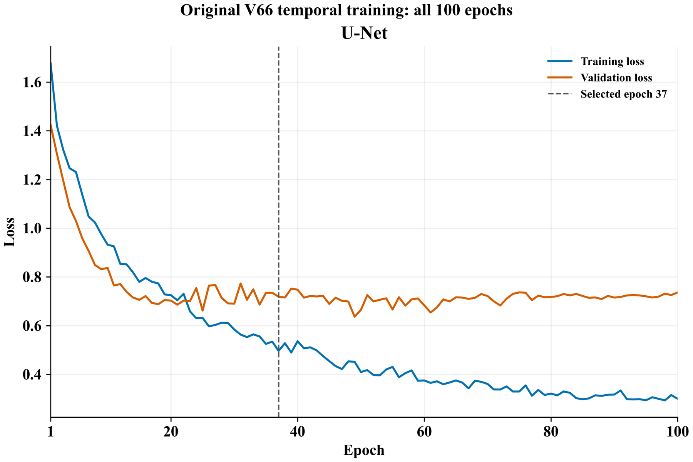
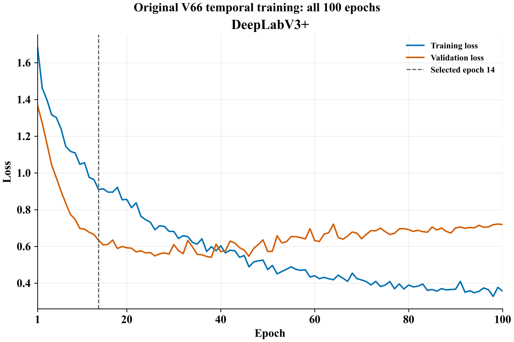
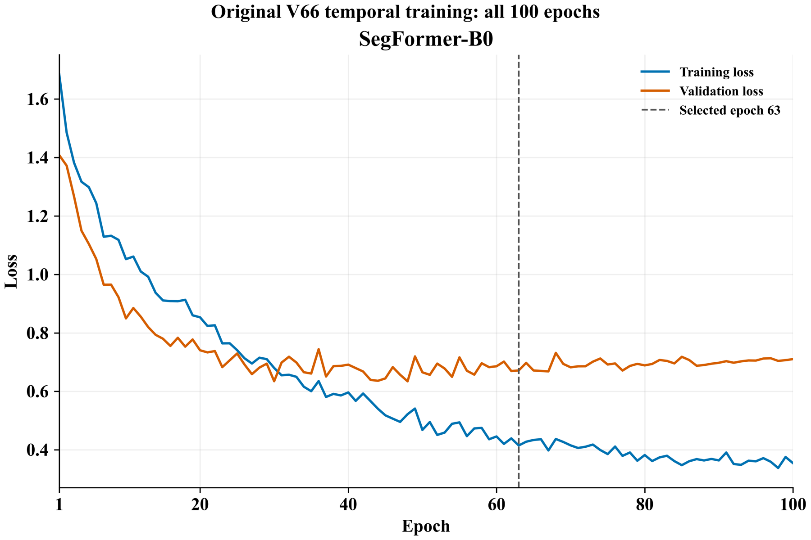
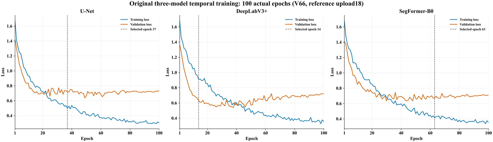
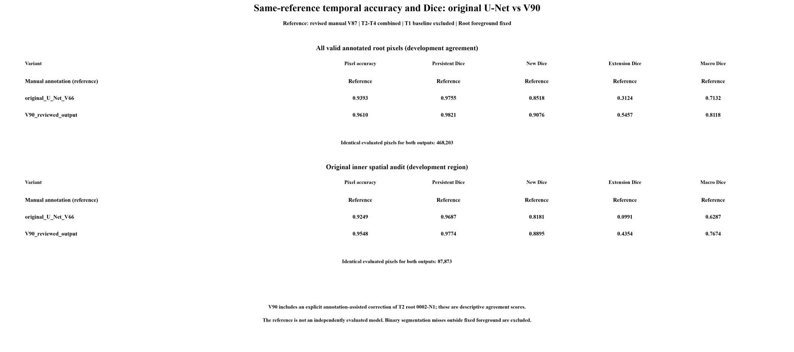